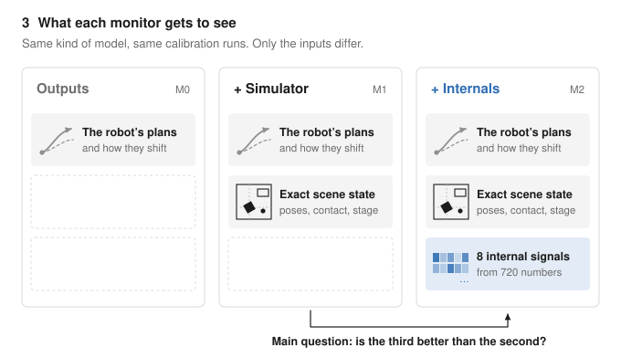
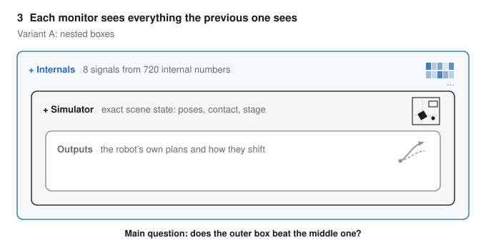
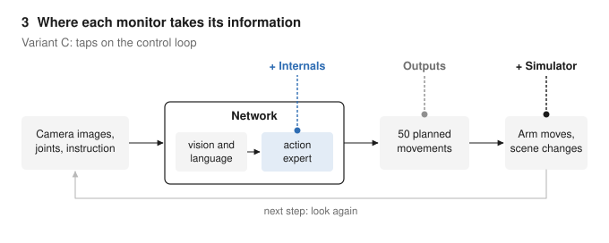
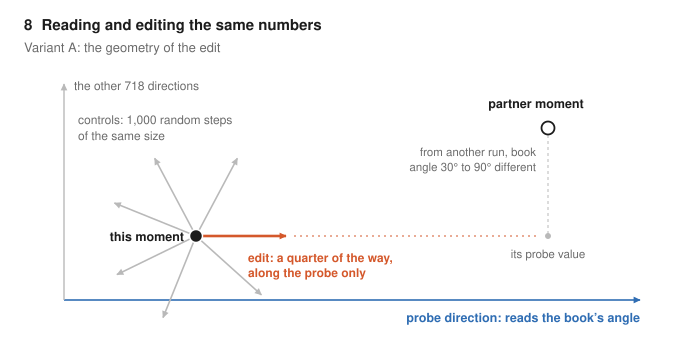
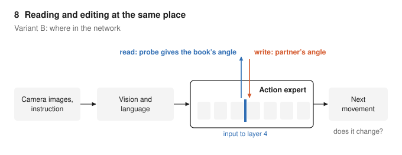
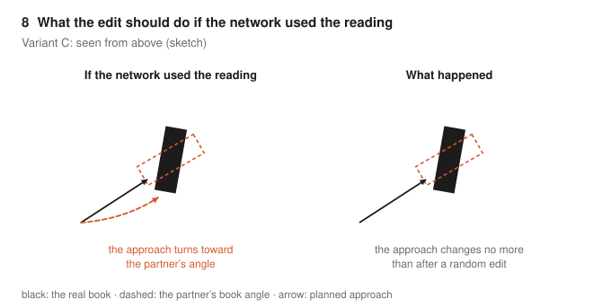

<meta charset="utf-8">
<title>Robot Post Figure Options</title>
<link rel="preconnect" href="https://fonts.googleapis.com">
<link rel="preconnect" href="https://fonts.gstatic.com" crossorigin>
<link rel="stylesheet" href="https://fonts.googleapis.com/css2?family=Schibsted+Grotesk:wght@400;500;600;700&family=Source+Serif+4:opsz,wght@8..60,400;8..60,600&display=swap">
<style>
/* Layout: one 680px column, each variant on its own white plate, in the same system as the post. */
:root {
  --bg: #fcfcfd; --fg: #1b1d21; --muted: #5d636b; --rule: #e2e4e8; --plate: #ffffff; --read: #2f6db3;
  --font-display: "Schibsted Grotesk", "Helvetica Neue", Helvetica, Arial, sans-serif;
  --font-body: "Source Serif 4", Georgia, serif;
}
@media (prefers-color-scheme: dark) {
  :root:not([data-theme="light"]) { --bg: #141619; --fg: #e6e7ea; --muted: #a0a6ae; --rule: #2b2f35; --plate: #ffffff; --read: #6fa1e0; color-scheme: dark; }
}
:root[data-theme="dark"] { --bg: #141619; --fg: #e6e7ea; --muted: #a0a6ae; --rule: #2b2f35; --plate: #ffffff; --read: #6fa1e0; color-scheme: dark; }
body { background: var(--bg); color: var(--fg); font: 1.05rem/1.6 var(--font-body); padding-inline: clamp(16px, 4vw, 40px); padding-block: 2rem 4rem; }
main { max-width: 680px; margin-inline: auto; }
h1 { font: 700 1.8rem/1.2 var(--font-display); margin: 0 0 .6rem; text-wrap: balance; }
h2 { font: 650 1.2rem/1.3 var(--font-display); margin: 2.6rem 0 .4rem; }
p { margin: 0 0 1rem; }
figure { margin: 1rem 0 1.8rem; }
.plate { background: var(--plate); border: 1px solid var(--rule); border-radius: 4px; overflow-x: auto; }
.plate img { display: block; width: 100%; height: auto; }
figcaption { font: 400 .9rem/1.5 var(--font-display); color: var(--muted); margin-top: .6rem; }
figcaption b { color: var(--fg); font-weight: 600; }
.inpost { color: var(--read); font-weight: 600; }
@media (max-width: 560px) { .plate img { min-width: 540px; } }
</style>
<main>
  <h1>Figure options for the robot post</h1>
  <p>Two figures were hard to call, so here are three versions of each. The post currently uses the one marked “in the post”. Tell me which one you prefer and I will swap it in.</p>

  <h2>Figure 3: what each monitor gets to see</h2>
  <figure>
    <div class="plate"></div>
    <figcaption><b>B, cards</b> <span class="inpost">· in the post</span>. Three cards side by side; each repeats what the previous one sees and adds one row. Easiest to read without background, and the arrow names the main comparison.</figcaption>
  </figure>
  <figure>
    <div class="plate"></div>
    <figcaption><b>A, nested boxes.</b> The nesting is the point of the design, and this shows it most directly. It says less about what each source contains.</figcaption>
  </figure>
  <figure>
    <div class="plate"></div>
    <figcaption><b>C, taps on the control loop.</b> Shows where each monitor takes its information from. Closest to the steering post’s “where do we read” figures, but it does not show that each monitor also sees the previous ones’ inputs.</figcaption>
  </figure>

  <h2>Figure 8: reading and editing the same numbers</h2>
  <figure>
    <div class="plate"></div>
    <figcaption><b>A, geometry</b> <span class="inpost">· in the post</span>. Shows exactly what the edit does: a quarter of the way toward the partner, only along the probe, against random steps of the same size.</figcaption>
  </figure>
  <figure>
    <div class="plate"></div>
    <figcaption><b>B, where in the network.</b> Read and write at the same spot, the input to layer 4 of the action expert. Says where, not what.</figcaption>
  </figure>
  <figure>
    <div class="plate"></div>
    <figcaption><b>C, seen from above.</b> The expected effect on the robot against what happened. The most intuitive, but it simplifies the measured quantity (the turn command) into a drawn approach path.</figcaption>
  </figure>
</main>
